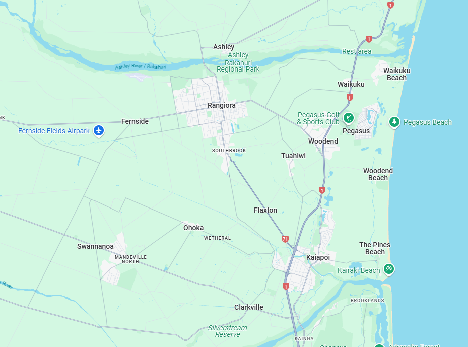

Waimakariri Gyms Website
What is this website about?
This website is created for people who live in the Waimak or
who are planning to travel to the Waiamk and are wanting to recieve information about gyms in the area.
The information that they may want to know about includes: Location, Price, Equipment and what gym is right for
them
What is the Waimakariri
Waimakariri is a district in the Canterbury region of New Zealand’s South Island. It lies north of Christchurch
and stretches from the coast to the foothills of the Southern Alps. The district includes towns like Rangiora,
Kaiapoi, and Woodend, which are growing communities with a mix of rural and suburban living.
Waimakariri is known for its fertile farmland, supporting agriculture such as dairy, cropping, and sheep
farming. The area also has beautiful natural landscapes, including rivers, beaches, and forests, making it
popular for outdoor activities like hiking, fishing, and cycling.
The district combines a relaxed rural lifestyle with access to urban services from nearby Christchurch. It has
been growing rapidly as people move there for more space while still commuting to the city. Waimakariri District
balances nature, farming, and modern living in one diverse and vibrant region.
Map of Waimakariri
